Capitolo 4
Diffrazione degli Elettroni
In questa scheda descriveremo un esperimento nel quale l’elettrone mostra delle proprietà molto diverse da quelle che dovrebbe avere una normale particella classica. Vedremo che un fascio di elettroni “sparati” da un cannone elettronico non sempre si comporta come un fascio di particelle, infatti in questo esperimento si comporterà come un’onda.
Descrizione dell’esperimento e previsioni classiche.
La figura 1 mostra uno schema di principio dell’esperimento. Abbiamo un fascio di elettroni che incide contro una sottile lamina di materiale cristallino, gli elettroni che attraversano la lamina vengono rilevati su uno schermo ai fosfori.
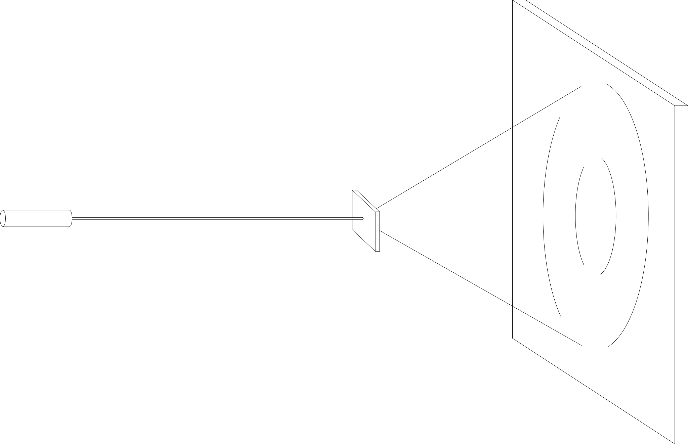
La struttura di un cristallo verrà studiata più avanti nella scheda sull’esperimento di Rutherford e nella scheda sui raggi X. Vedremo che un cristallo è costituito da un aggregato di nuclei atomici disposti secondo un reticolo tridimensionale (Fig. 2), con una geometria più o meno complicata. Vedremo inoltre, che la distanza tra due nuclei adiacenti è molto maggiore del diametro del nucleo.
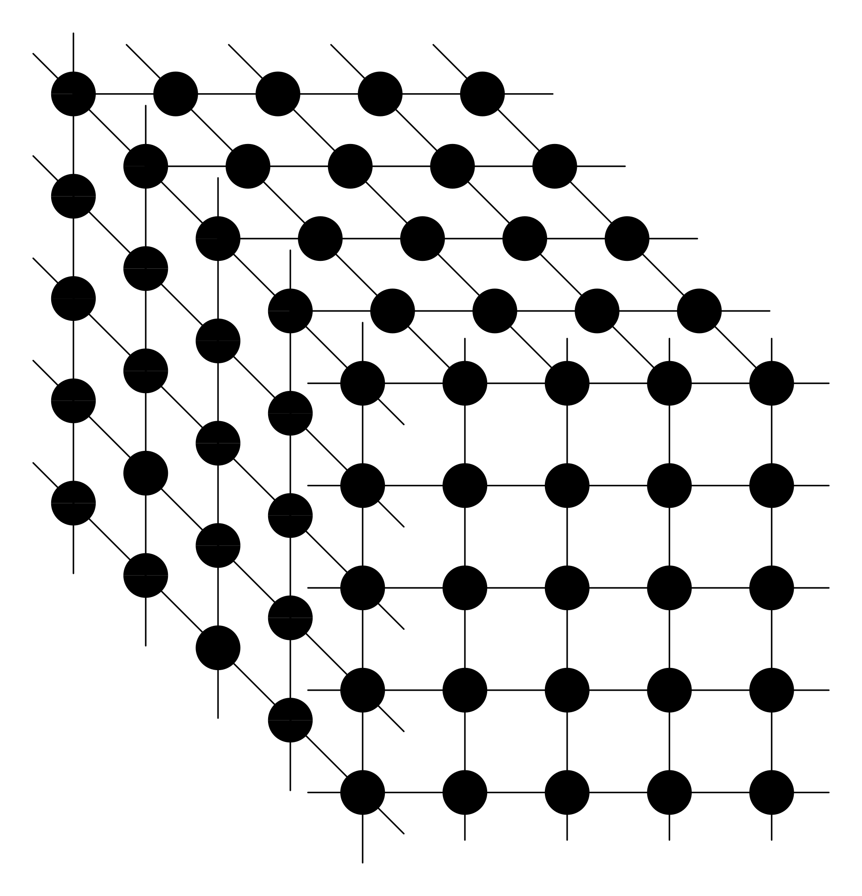
Da un punto di vista classico ci aspettiamo che un elettrone, quando attraversa un cristallo, venga deflesso in un certo angolo ed in una certa direzione che dipendono dal moto iniziale dell’elettrone e dall’orientazione del cristallo (Fig.3). Un fascio è formato da parecchi elettroni ogni uno con condizioni dinamiche leggermente differenti da ogni altro. Quindi, al di là del cristallo, avremo una dispersione del fascio dovuta al fatto che non tutti gli elettroni saranno deflessi sotto lo stesso angolo.
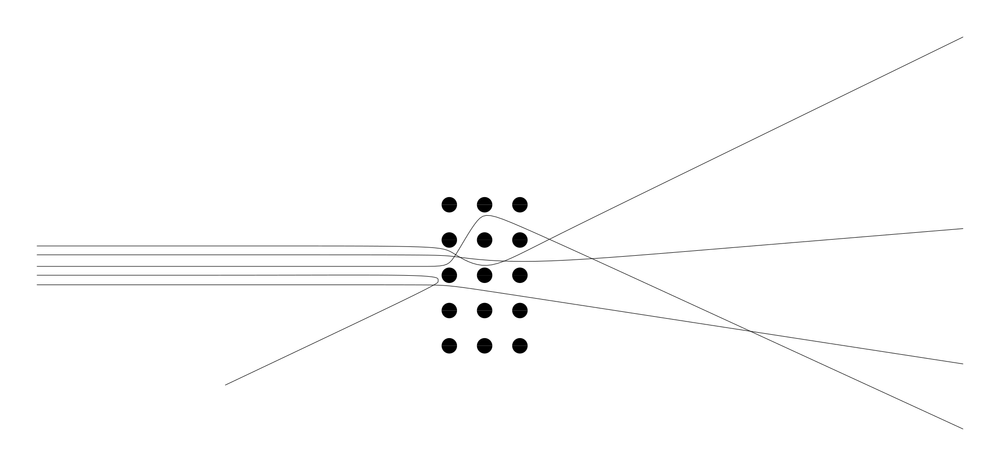
L’angolo di deflessione ( è una variabile aleatoria, cioè è una grandezza che può assumere diversi valori, ogni uno con una certa probabilità. La distribuzione di probabilità per la variabile ( può essere calcolata in base al modello corpuscolare dell’elettrone, ed in base a questo modello ci aspettiamo una curva a campana come quella mostrata in figura 4. Ma, come vedremo, la distribuzione di elettroni effettivamente rilevata sullo schermo non corrisponde a questa previsione classica.
Descrizione dell’apparato sperimentale.
Il cannone elettronico, la lamina di materiale cristallino e lo schermo ai fosfori sono montati all’interno di un’ampolla di vetro sotto vuoto.
La figura 5 mostra una foto di quest’ampolla, mentre le figure 6 e 7 mostrano in dettaglio il cannone elettronico.

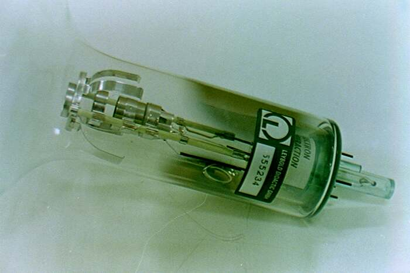

Uno schema è rappresentato in figura 8.
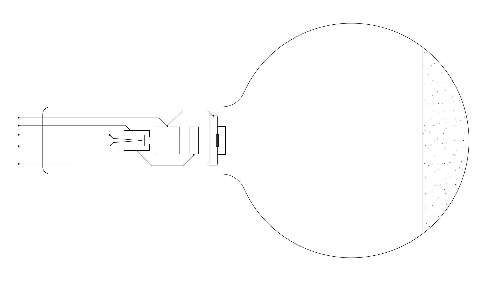
Come si vede dalla foto di figura 6 e dallo schema di figura 8, la lamina di cristallo è disposta direttamente sullo stadio finale del cannone elettronico.
Il sistema si alimenta come mostrato in figura 9.
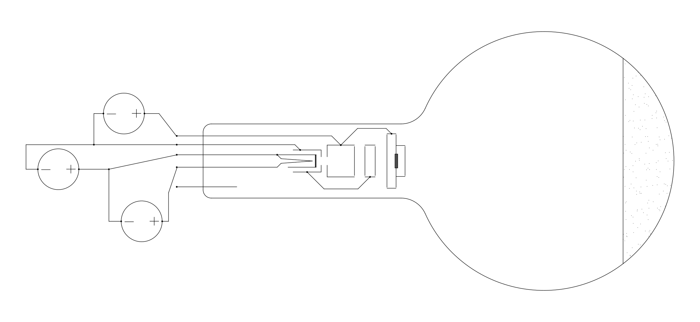
Gli alimentatori utilizzati sono due, uno per l’alta tensione di 0 ( 5000kV ed uno per le basse tensioni di 6V e di 0 ( 50V. La foto in figura 10 mostra l’intero sistema alimentato. A sinistra c’è l’alimentatore ad alta tensione, ed a destra l’alimentatore per le basse tensioni. L’ampolla è montata su un supporto universale.
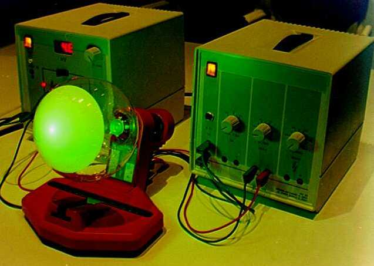
Risultati sperimentali.
La foto di figura 11 mostra in dettagli l’immagine ottenuta sullo schermo.
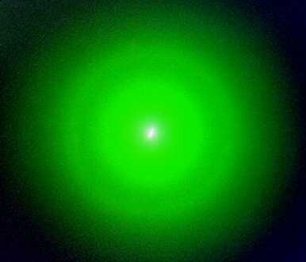
Si osservano un punto centrale e due cerchi concentrici. La distribuzione di probabilità per la variabile ( che si deduce da quest’immagine è quella riportata in figura 12.
Se variamo la tensione di accelerazione si osserva che variano i raggi dei due cerchi, cioè variano gli angoli di deflessione (1 e (2.
Sono state effettuate le seguenti misure:
V (Volt) (1 (rad) (2 (rad) 2500 0,115 0,199 3000 0,105 0,182 3500 0,097 0,168 4000 0,091 0,157 4500 0,086 0,148 La figura 13 riporta due grafici delle misure effettuate, uno con la tensione V in ordinata, l’altro con l’inverso della radice della tensione
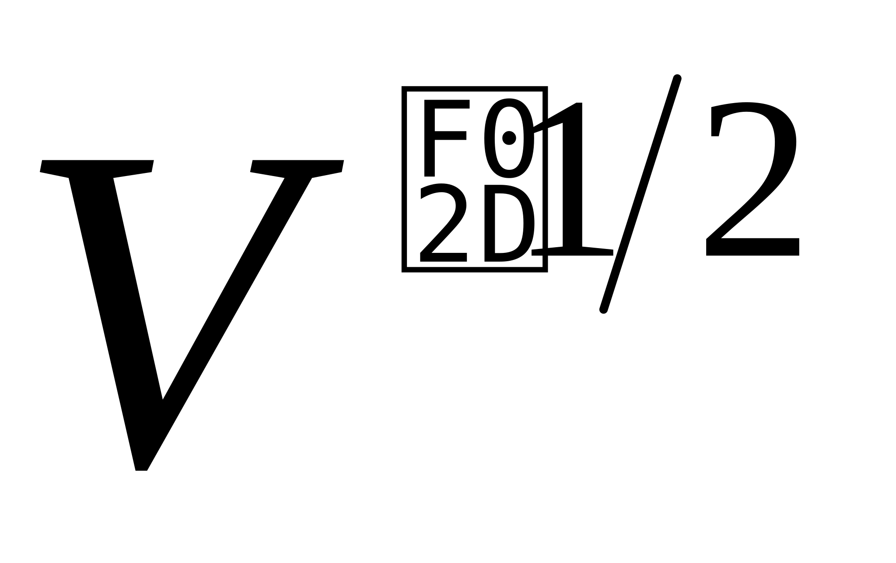
. Dal secondo grafico si può osservare che gli angoli (1 e (2 sono direttamente proporzionali all’inverso della radice quadrata della tensione: e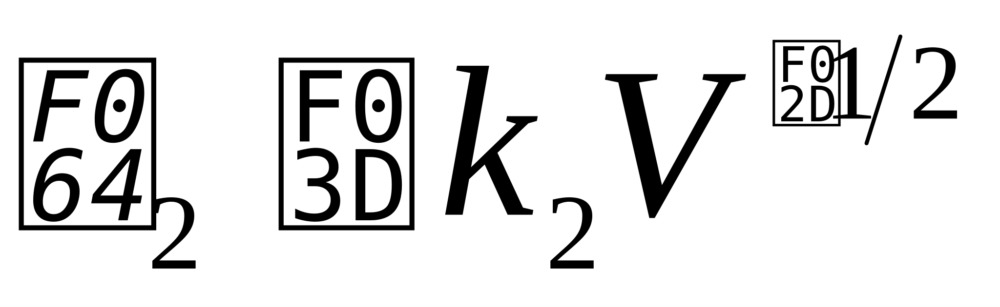
.Interpretazione dei risultati.
La figura ottenuta sullo schermo non può essere spiegata se si pensa che il cannone elettronico spara un fascio di particelle materiali classiche. Si può spiegare, invece, se si pensa che il cannone genera un’onda simile a quella generata da un LASER, ma non elettromagnetica. Infatti, secondo quest’idea, l’immagine formata sullo schermo, può essere interpretata come una figura di diffrazione prodotta dal reticolo cristallino della grafite che è contenuta nella lamina posta davanti al fascio.
La grafite ha una struttura cristallina piana rappresentata nella figura 14. All’interno di questo reticolo si possono individuare diversi sottoreticoli a linee parallele equidistanziate (Fig. 15). La diffrazione dovuta al reticolo originale è approssimativamente pari alla sovrapposizione delle diffrazioni prodotte dai singoli reticoli a linee parallele equidistanziate.

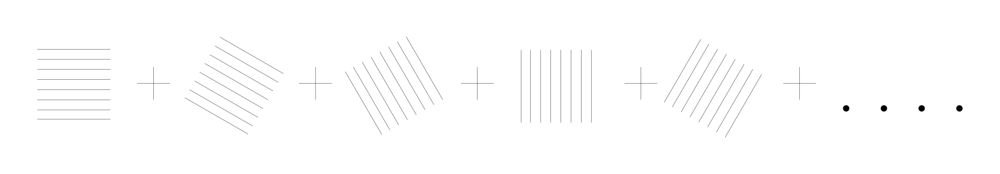
Nel cristallo si individuano due tipi di reticoli a linee parallele, una con distanza
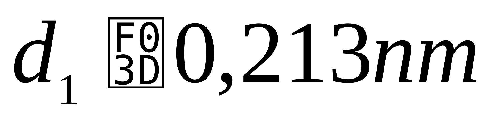
, e l’altro con distanza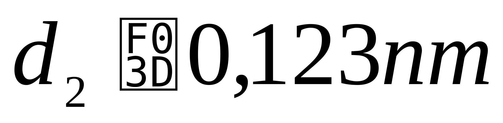
. Quindi, quando il fascio attraversa il reticolo, abbiamo due angoli di diffrazione del primo ordine: corrispondente a e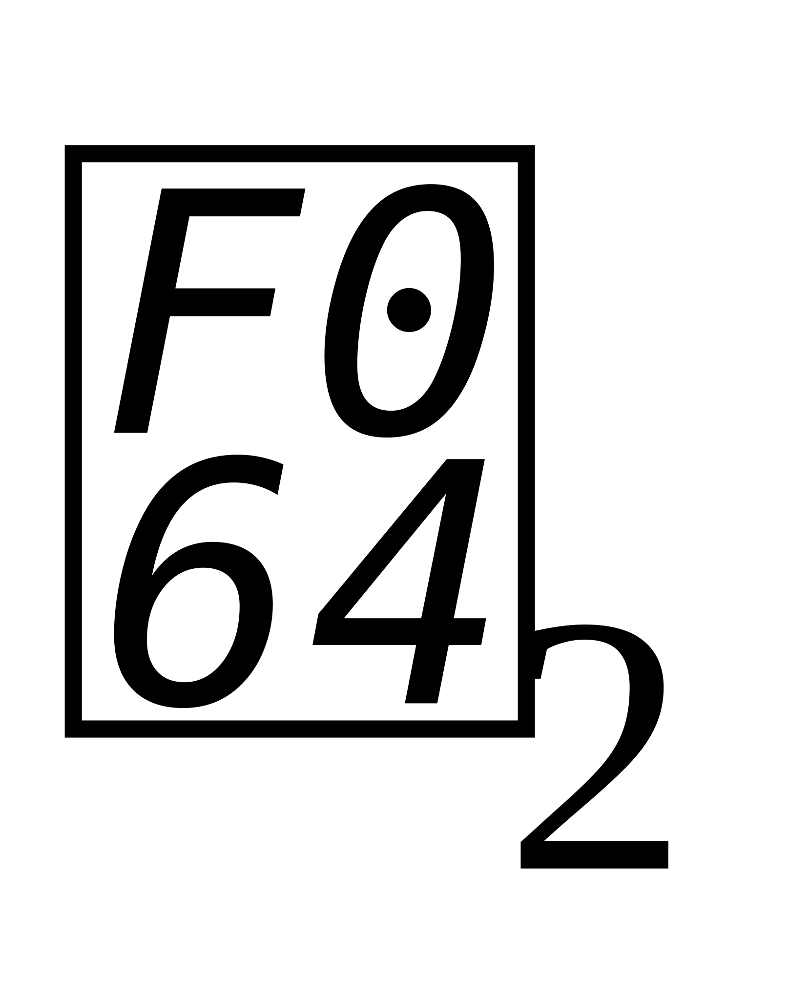
corrispondente a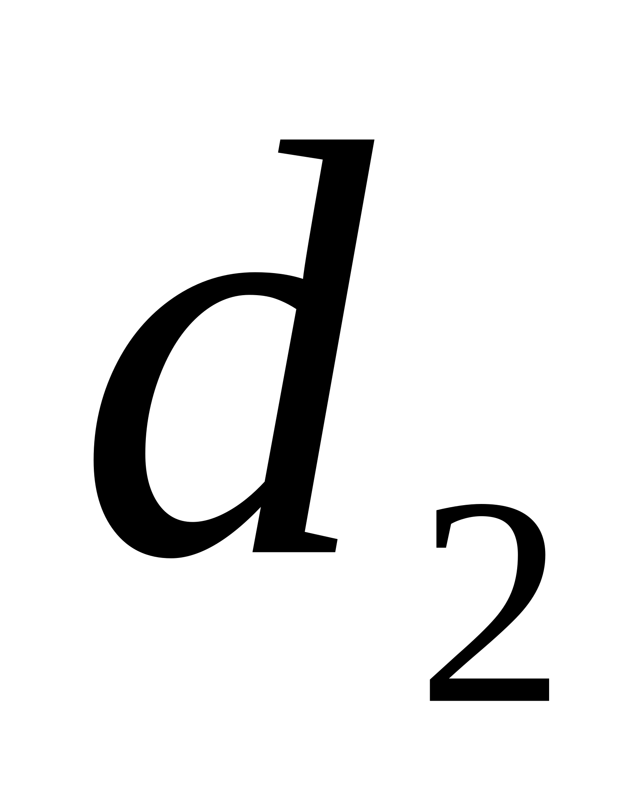
.I cerchi della figura 11 si formano perché la lamina è formata da tanti cristalli orientati a caso:
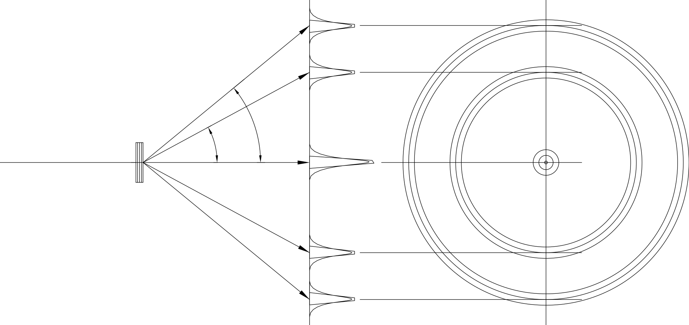
Ogni singolo cristallo forma un’immagine costituita da alcuni punti:
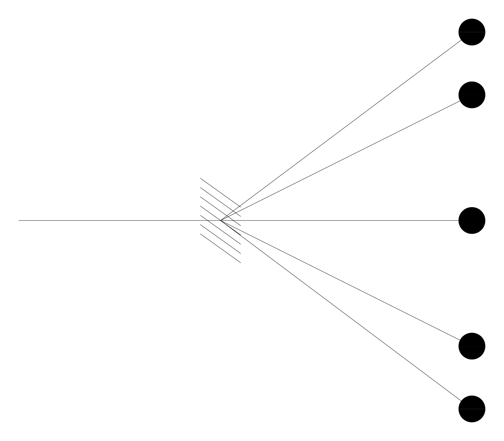
La sovrapposizione di tante immagini ruotate di un angolo casuale forma i cerchi:
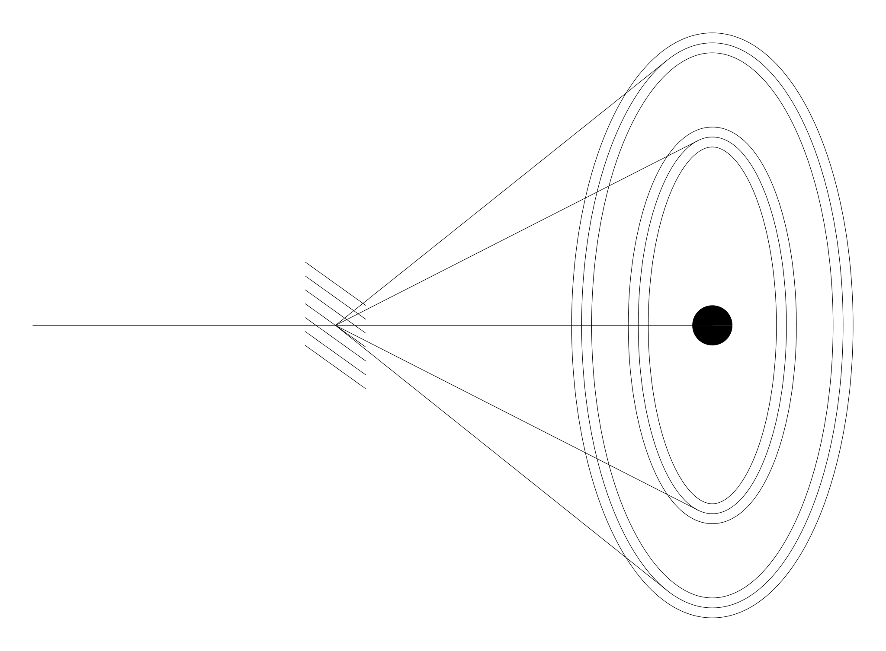
Il fatto che gli angoli di diffrazione del primo ordine dipendono dalla tensione di accelerazione applicata, vuol dire che la lunghezza d’onda del fascio dipende dalla tensione.
Dualismo onda particella e relazione di De Broglie.
Il cannone elettronico spara una raffica di particelle oppure genera un fascio di onde? L’esperimento descritto in questa scheda ci porta a pensare che si tratta di un fascio di onde, ma altri esperimenti ci portano all’altra risposta. Il risultato e che nessuna delle due ipotesi è realmente corretta, l’elettrone non è ne un’onda ne una particella.
L’elettrone ha un comportamento corpuscolare, nel senso che quando interagisce con altri sistemi provoca degli effetti discreti, a pacchetti. Ad esempio nell’esperimento di Millikan si osservavano gli effetti di un singolo elettrone o di pochi elettroni alla volta, infatti si osservava una carica discreta, a pacchetti. Esistono anche altri esperimenti che mostrano la natura corpuscolare dell’elettrone ma li descriveremo più avanti.
L’elettrone ha anche un comportamento ondulatorio, perché può produrre diffrazione. È anche possibile mostrare l’interferenza degli elettroni, simile a quella generata dalla luce con due fenditure, ma l’apparato sperimentale che serve per osservare questo fenomeno comprende un microscopio elettronico, ed è piuttosto difficile trovare un laboratorio didattico fornito di un tale sistema.
Si conclude che quando pensiamo ad un elettrone dovremmo immaginare una particella materiale accompagnata da un onda. La lunghezza d’onda è data da una formula trovata da De Broglie:  , dove p è la quantità di moto della particella, ( è la lunghezza d’onda e h è la costante di Planck. Questa formula può essere confermata con il nostro esperimento ed ha una validità molto generale, nel senso che vale per tutti i tipi di particelle, vale per gli elettroni, per i nuclei atomici, per le particelle di luce e così via. Nella seguente tabella sono riportate le misure sperimentali che abbiamo effettuato, si sono inoltre riportate la lunghezza d’onda
, dove p è la quantità di moto della particella, ( è la lunghezza d’onda e h è la costante di Planck. Questa formula può essere confermata con il nostro esperimento ed ha una validità molto generale, nel senso che vale per tutti i tipi di particelle, vale per gli elettroni, per i nuclei atomici, per le particelle di luce e così via. Nella seguente tabella sono riportate le misure sperimentali che abbiamo effettuato, si sono inoltre riportate la lunghezza d’onda
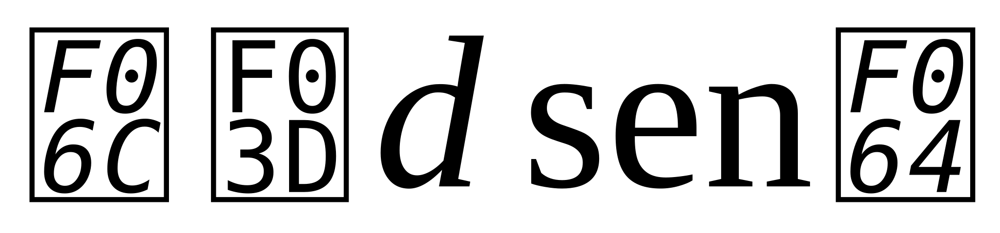
, calcolata in base alla formula della diffrazione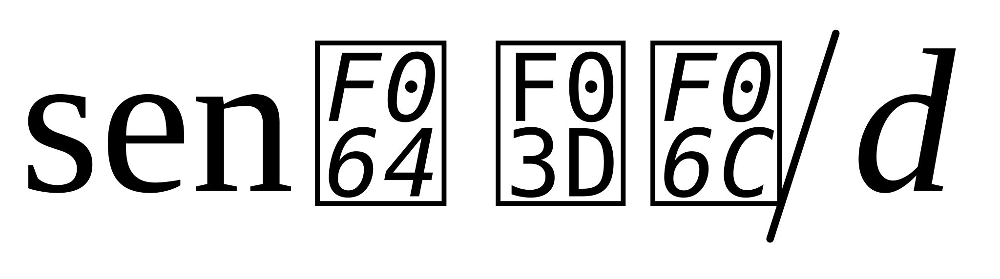
, e la quantità di moto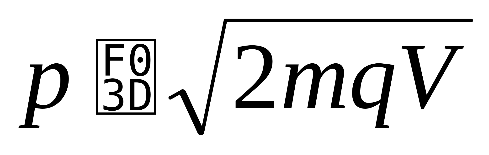
, calcolata in base all’equazione dell’energia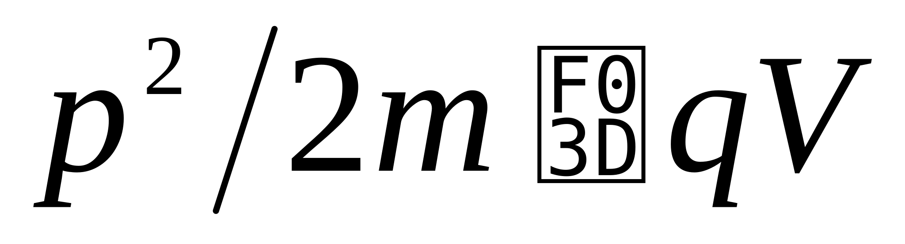
. Nell’ultima colonna si è riportato il prodotto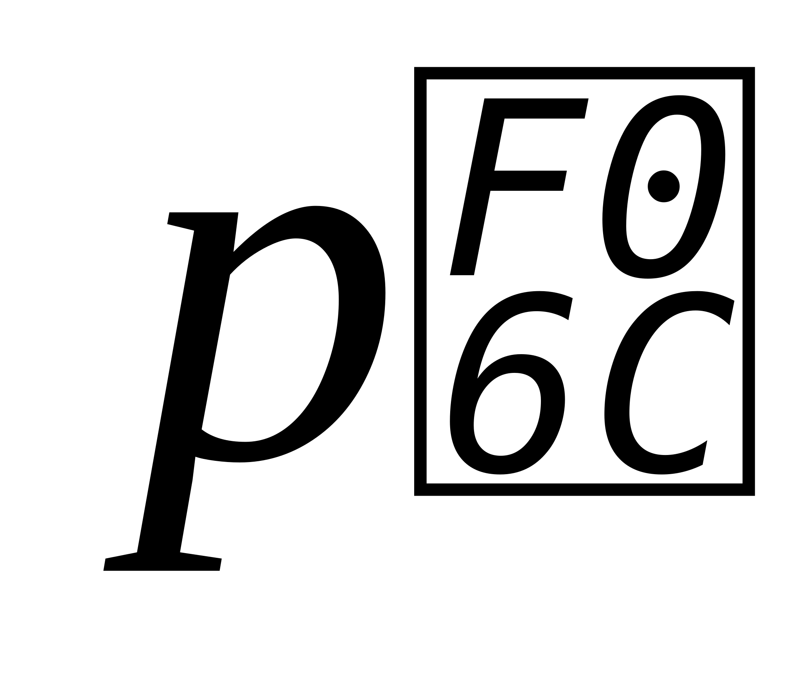
che come si vede è praticamente costante.V (Volt) p (10-23kg(m/s) (1 (rad) (2 (rad) ( (10-11m) p( (10-34Joule(s) 2500 2,7 0,12 0,20 2,4 6,5 3000 3,0 0,11 0,18 2,2 6,6 3500 3,2 0,097 0,17 2,1 6,7 4000 3,4 0,091 0,16 1,9 6,5 4500 3,6 0,086 0,15 1,8 6,5
Interpretazione probabilistica.
In questo paragrafo riprenderemo i concetti introdotti nella seconda scheda per applicarli all’elettrone.
Una particella materiale, dal punto di vista della Meccanica Quantistica, è considerata come un sistema fisico sul quale è possibile effettuare misure di posizione. Quando eseguiamo una tale misura, il risultato in generale non è certo, ma è aleatorio. Quindi abbiamo una distribuzione di probabilità per la variabile x. Come abbiamo detto nella scheda due, le probabilità possono essere ottenute come i moduli quadrati di certi numeri complessi detti ampiezze di probabilità. Quindi abbiamo una certa funzione complessa  e la probabilità è data da.
e la probabilità è data da.
La funzione  è una distribuzione di ampiezze di probabilità e caratterizza lo stato della particella, questa funzione può essere vista come un vettore di infiniti numeri complessi e la rappresenteremo con il simbolo di vettore ket
è una distribuzione di ampiezze di probabilità e caratterizza lo stato della particella, questa funzione può essere vista come un vettore di infiniti numeri complessi e la rappresenteremo con il simbolo di vettore ket
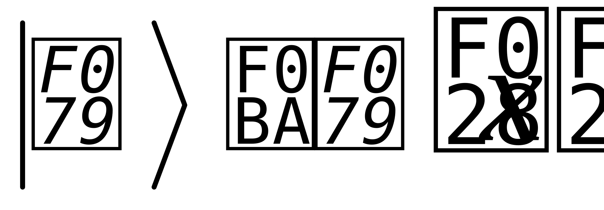
.Quando lo stato della particella evolve la funzione ( cambia con il tempo, quindi otteniamo una funzione che dipende dallo spazio e dal tempo  che possiamo rappresentare con un ket che dipende dal tempo
che possiamo rappresentare con un ket che dipende dal tempo  .
.
Come abbiamo visto nella scheda due, l’evoluzione temporale è descritta da una legge lineare  . Dove
. Dove
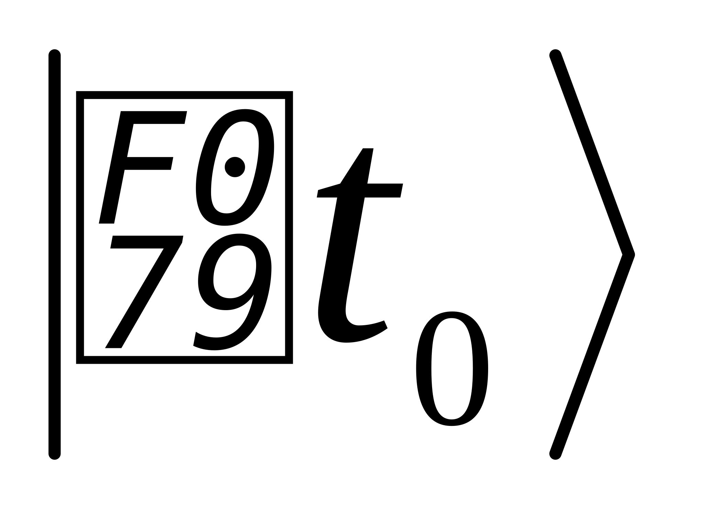
è il vettore associato alla funzione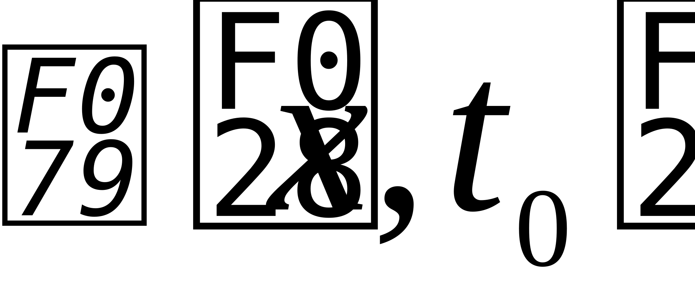
rappresentativa dello stato iniziale;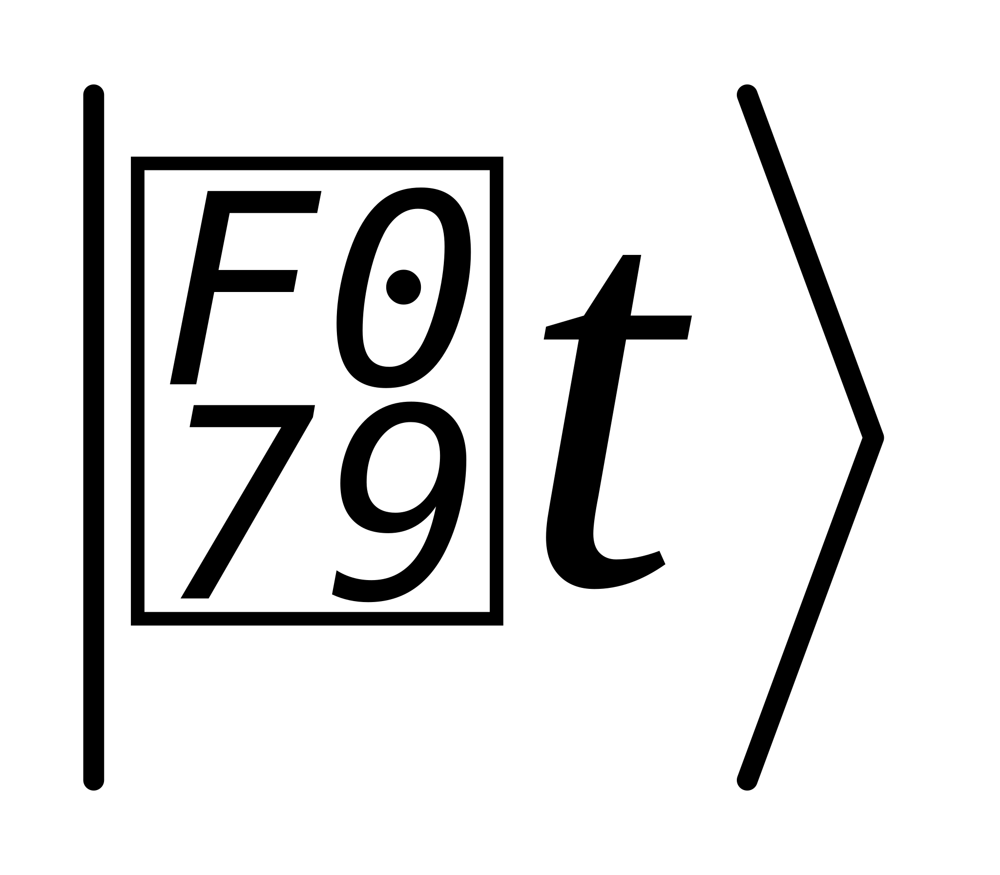
è il vettore associato alla funzione rappresentativa dello stato all’istante t; e
rappresentativa dello stato all’istante t; e  è una matrice di ((( elementi, che dipende dal sistema e dalle condizioni “ambientali”.
è una matrice di ((( elementi, che dipende dal sistema e dalle condizioni “ambientali”.
A questo punto si pone il problema di determinare la matrice di evoluzione temporale  . Risolveremo questo problema più avanti, per ora vogliamo anticipare il seguente risultato qualitativo: l’equazione finale che otterremo assomiglierà molto all’equazione delle onde, e le soluzioni
. Risolveremo questo problema più avanti, per ora vogliamo anticipare il seguente risultato qualitativo: l’equazione finale che otterremo assomiglierà molto all’equazione delle onde, e le soluzioni  avranno l’aspetto di pacchetti d’onda. Quindi l’onda che accompagna una particella materiale, di cui parlavamo nel paragrafo precedente, non è altro che il vettore delle ampiezze di probabilità
avranno l’aspetto di pacchetti d’onda. Quindi l’onda che accompagna una particella materiale, di cui parlavamo nel paragrafo precedente, non è altro che il vettore delle ampiezze di probabilità  associato alla variabile posizione.
associato alla variabile posizione.
Per chiarezza ricapitoliamo i punti importanti di che abbiamo introdotto:
Una particella materiale è caratterizzata dalla variabile posizione, cioè da una coordinata che indicheremo brevemente con il simbolo x.
Lo stato di una particella materiale in un istante t è rappresentato dalla distribuzione di ampiezze di probabilità  della variabile x, che indicheremo con il simbolo di ket
della variabile x, che indicheremo con il simbolo di ket  .
.
L’evoluzione dello stato è descritta dalla seguente equazione:
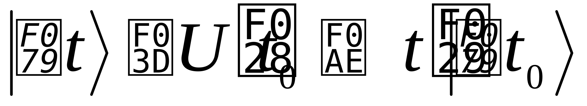
dove  è una matrice di ((( componenti.
è una matrice di ((( componenti.
Equazione di evoluzione temporale in forma differenziale.
L’equazione di evoluzione temporale che abbiamo scritto consente di fare un salto finito tra gli istanti t0 e t. Tuttavia è più comodo considerare un salto temporale infinitesimo t(t+dt. In questo caso abbiamo l’equazione
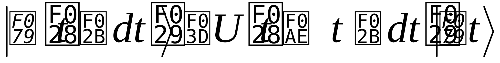
sottraendo ad ambo i membri  e dividendo per dt otteniamo
e dividendo per dt otteniamo
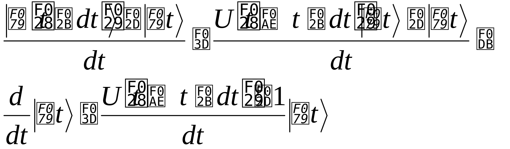
Per semplificare il secondo membro possiamo scrivere la matrice
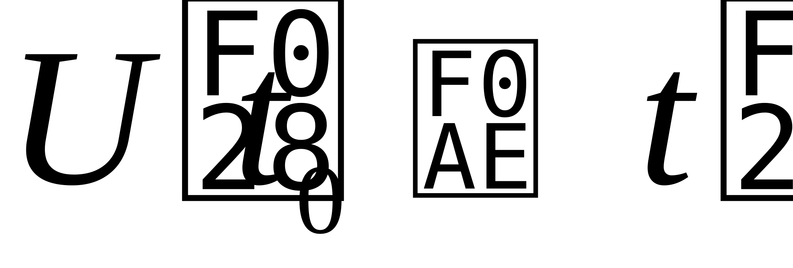
con un’approssimazione del primo ordine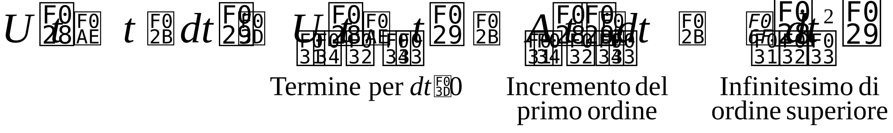
dove  è la derivata
è la derivata
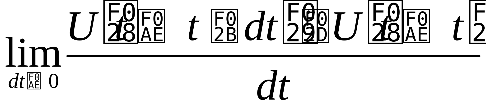
.Sostituendo questa approssimazione del primo ordine abbiamo
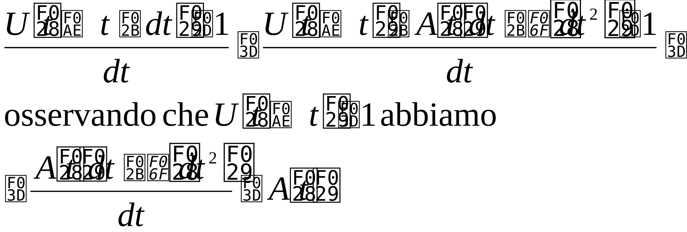
Quindi in definitiva otteniamo l’equazione

Il problema di determinare  è cambiato nel problema di determinare la derivata
è cambiato nel problema di determinare la derivata
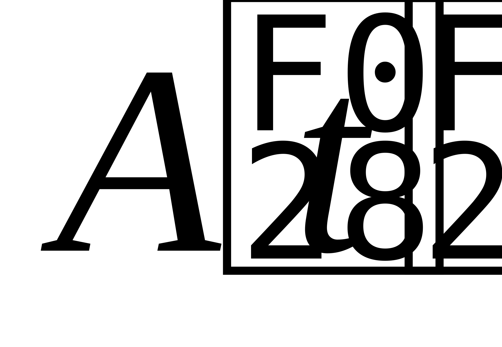
.Prima di procedere è necessario soffermarci su alcuni argomenti di carattere matematico.
Algebra degli operatori.
Vettori e matrici a dimensione infinita
In questa scheda abbiamo introdotto vettori e matrici a dimensione infinita. Nei casi a dimensione finita un vettore viene rappresentato da una n-upla di componenti
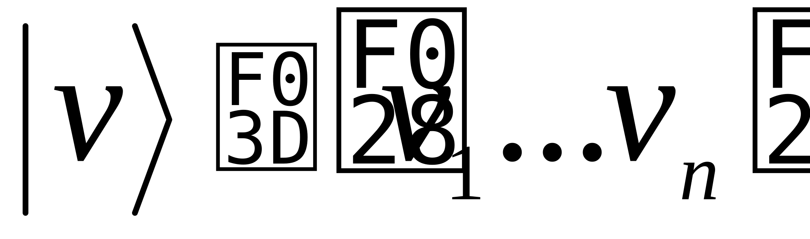
, nei casi a dimensione infinita, invece, possiamo rappresentare un vettore con una funzione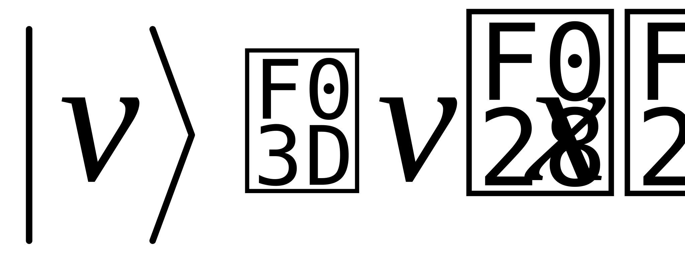
dove la variabile x assume il ruolo degli indici. Analogamente una matrice a dimensione infinita si rappresenta con una funzione di due variabili .Il prodotto tra una matrice ed un vettore, ad esempio, si può scrivere mediante un integrale
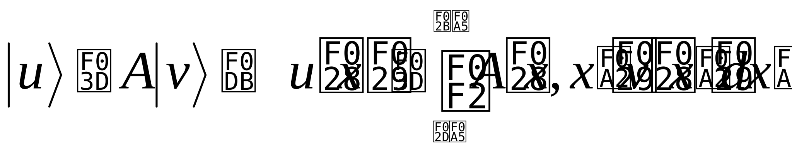
In modo analogo si possono scrivere altri tipi di prodotti tra matrici o tra vettori.
Matrice aggiunta e matrici hermitiane, antihermitiane ed unitarie.
Supponiamo di avere un vettore ket
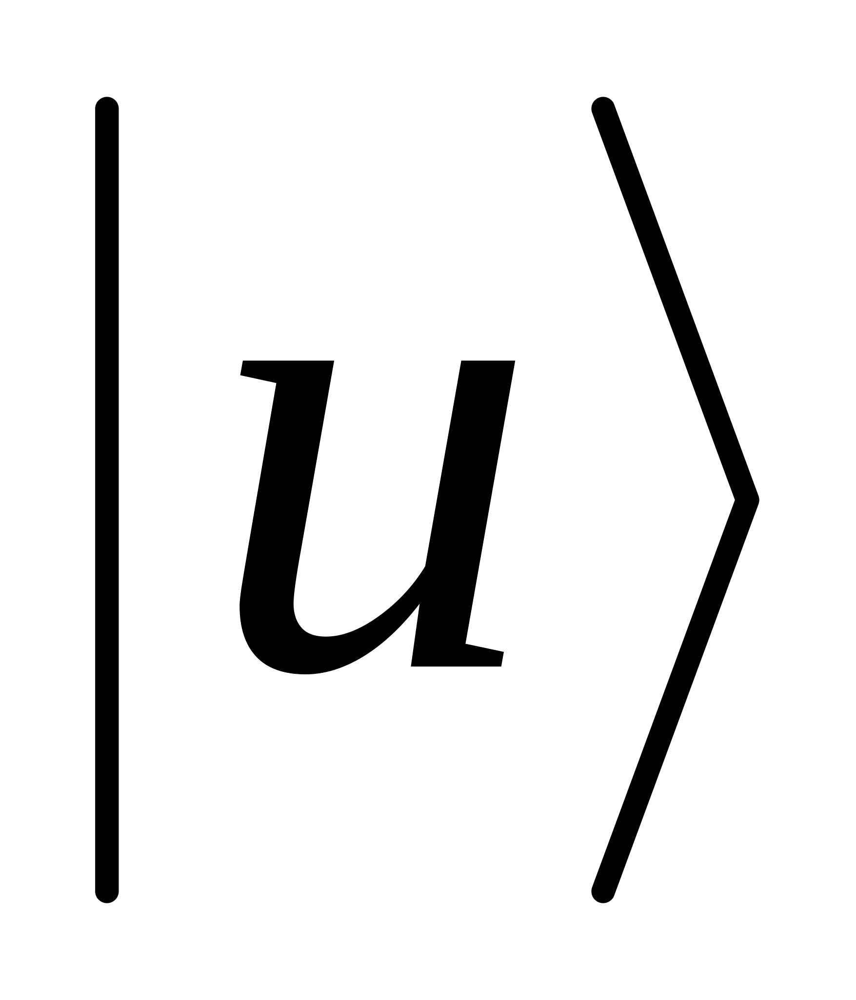
dato dal prodotto tra una matrice A ed un altro vettore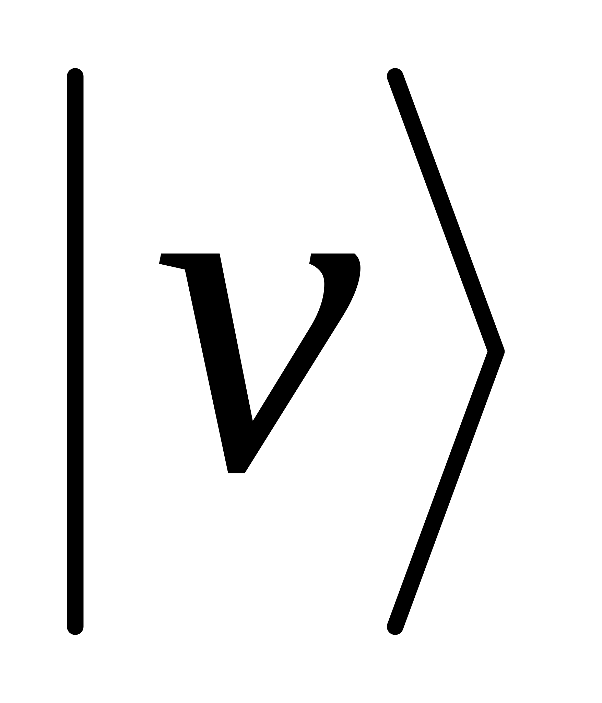
e supponiamo di dover determinare il bra coniugato
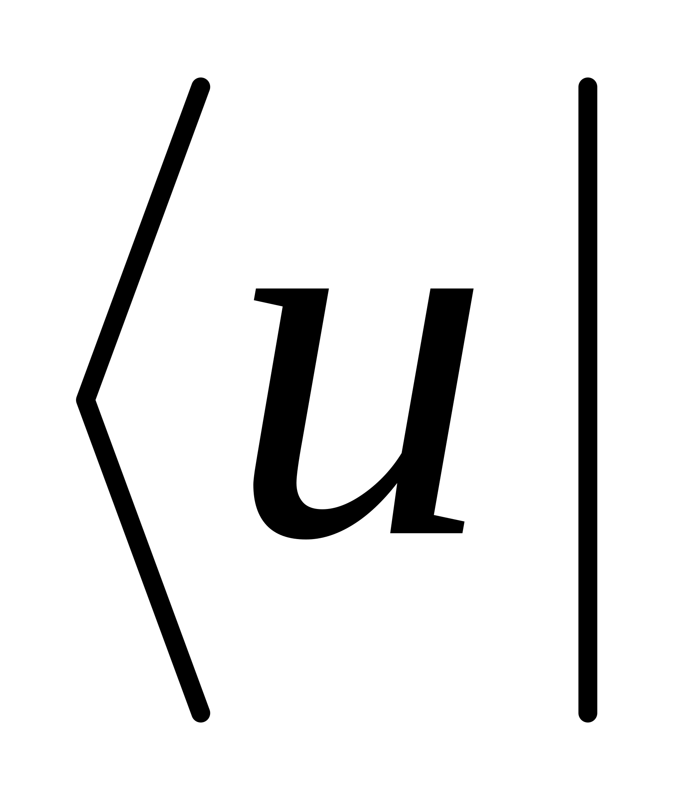
. Consideriamo ad esempio il caso a dimensione due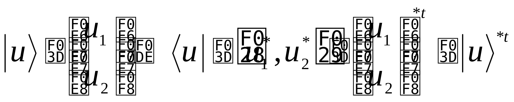
Dunque il bra  si ottiene coniugando
si ottiene coniugando
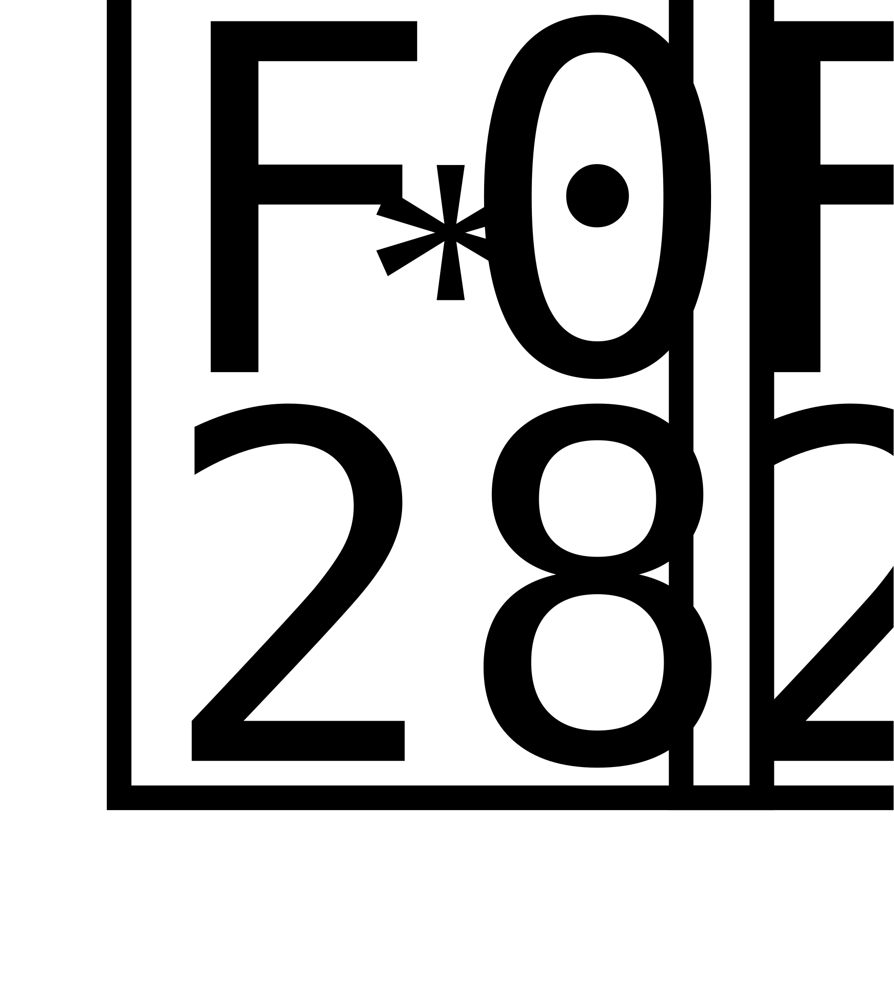
e trasponendo il ket
In definitiva possiamo scrivere
dove la matrice  si ottiene coniugando e trasponendo la matrice A.
si ottiene coniugando e trasponendo la matrice A.
Per definizione diremo che la matrice è la aggiunta della matrice A, e la indicheremo con il simbolo
Ad esempio, per una matrice a dimensione due
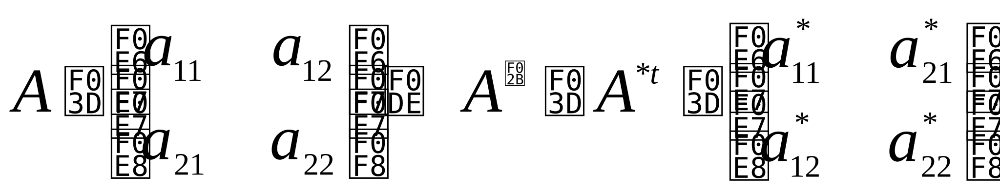
In base a questa definizione possiamo scrivere che il bra coniugato del ket
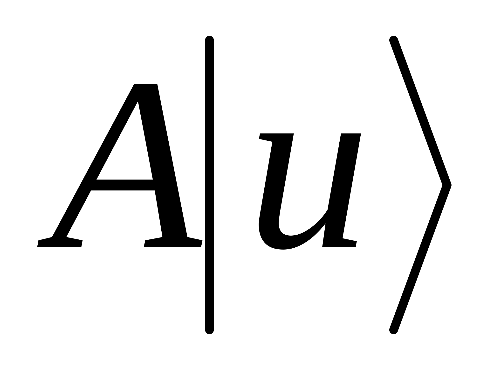
è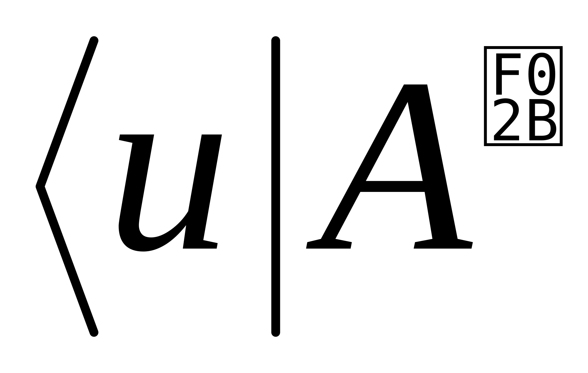
.Per definizione se una matrice è uguale alla sua aggiunta
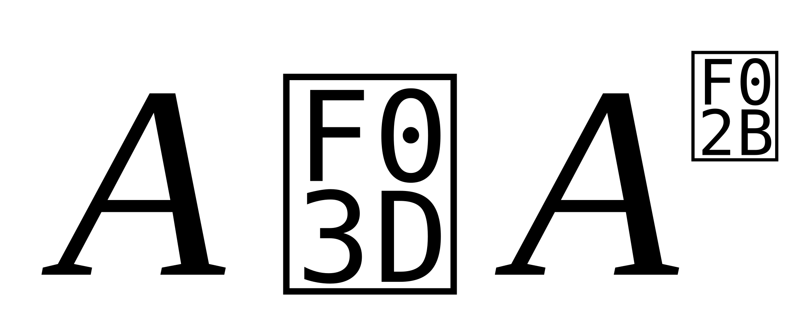
, allora si dice che è hermitiana, se invece la matrice è uguale alla sua aggiunta cambiata di segno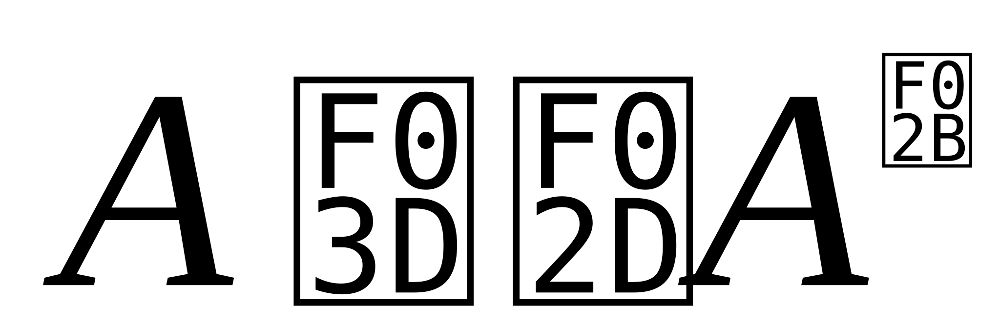
, allora si dice che è antihermitiana. Una matrice tale che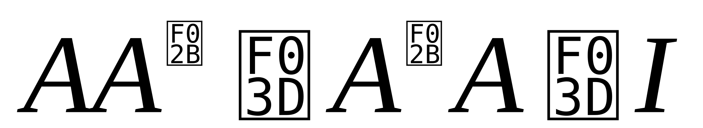
, dove I è la matrice identità, si dice che è unitaria.L’operazione di prendere la matrice aggiunta nel campo dellle matrici assume il ruolo dell’operazione di prendere il complesso coniugato nel campo dei numeri complessi. Quindi le matrici hermitiane assumono il ruolo dei numeri reali puri, mentre le matrici antihermitiane assumono il ruolo dei numeri immaginari puri. Le matrici unitarie, infine, assumono il ruolo dei numeri a modulo unitario.
Le matrici hermitiane, le antihermitiane e le unitarie hanno delle proprietà molto interessanti che studieremo più avanti, ed hanno una notevole importanza in Meccanica Quantistica.
Rapporto tra matrici ed operatori.
Nel caso di vettori a dimensione finita sappiamo, dagli studi di algebra lineare, che un qualunque operatore lineare
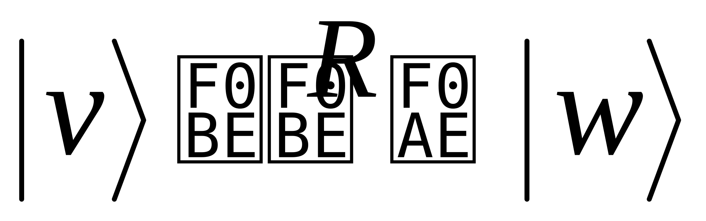
può essere scritto come un prodotto matriciale , dove R è una particolare matrice associata all’operatore in questione.Questa proprietà resta valida anche nel caso di vettori a dimensione infinita, ma è molto più delicata dal punto di vista matematico.
Consideriamo ad esempio l’operatore derivata che indicheremo con D. L’operatore D trasforma un vettore  associato dalla funzione nel vettore associato dalla funzione
associato dalla funzione nel vettore associato dalla funzione
Ci chiediamo: qual è la matrice, cioè la funzione di due variabili, che rappresenta l’operatore derivata? La funzione che cerchiamo è la derivata della ( di Dirac
infatti eseguendo il prodotto matriciale abbiamo
L’operatore è antihermitiano, infatti
cioè coniugando e trasponendo la matrice associata a D si ottiene una matrice di segno opposto .
In genere si preferisce usare l’operatore che è hermitiano, infatti
D’ora in avanti parleremo indifferentemente di operatori oppure di matrici. Un operatore derivata in genere sarà rappresentato dall’operazione di derivata piuttosto che dalla matrice associata, comunque è importante sapere che ad un qualsiasi operatore lineare è sempre associata una determinata matrice, sia essa a dimensione finita o infinita.
Funzioni di operatori o funzioni di matrici.
Se prendiamo un operatore A e lo applichiamo due volte otteniamo l’operatore , allo stesso modo possiamo ottenere , ecc.
Se prendiamo l’operatore inverso e lo applichiamo due volte definiamo l’operatore , allo stesso modo otteniamo , ecc.
Se consideriamo un polinomio
da esso possiamo costruire l’operatore
.
In generale da una funzione sviluppabile in serie di potenze
possiamo costruire l’operatore
(si pone dove I è l’operatore identità)
Ritorniamo ora allo studio dell’equazione di evoluzione temporale.
Conservazione del prodotto scalare.
Nella seconda scheda abbiamo visto un’importante proprietà del processo di evoluzione temporale, abbiamo visto che durante questo processo i prodotti scalari tra diversi ket si mantengono costanti. Ora vedremo cosa comporta questo fatto per la matrice A che compare nell’equazione
Consideriamo due ket  e
e  , calcoliamo l’evoluzione di questi ket nell’istante t+dt
, calcoliamo l’evoluzione di questi ket nell’istante t+dt
In base alla proprietà di conservazione del prodotto scalare, deve essere
sostituendo le formule trovate per e abbiamo
dividendo per dt e prendendo il limite per dt(0 abbiamo
Questa equazione è valida per ogni  e , quindi deve essere
e , quindi deve essere
Dunque la matrice A è antihermitiana. Per una questione di convenzione si preferisce sostituire la matrice A con la matrice , dove i è l’unità complessa.
La matrice H è detta hamiltoniana ed è hermitiana, infatti
L’equazione di evoluzione scritta in termini della matrice H appare così

Quest’equazione viene chiamata equazione di Schrödinger.
Determinazione della matrice hamiltoniana.
Per determinare la matrice H sfrutteremo le informazioni che conosciamo dalla Meccanica Classica. Sappiamo che le leggi di Newton sono molto accurate in un vasto campo di fenomeni, quindi sceglieremo la matrice H in modo che la legge di evoluzione temporale della Meccanica Quantistica e la legge di Newton f=ma diano gli stessi risultati per questo campo di fenomeni.
Per semplicità consideriamo un caso non molto complicato, determiniamo la matrice hamiltoniana per una particella carica in uno spazio monodimensionale, in presenza di un campo elettrico indipendente dal tempo.
La legge di Newton si può scrivere nella forma
La legge della Meccanica Quantistica è sicuramente molto diversa
La diversità tra le due equazioni è dovuta al modo in cui rappresentiamo l’evoluzione del sistema. Dal punto di vista classico abbiamo una particella materiale e dobbiamo determinare la legge oraria . Dal punto di vista quantistico, invece, abbiamo un sistema con la sua grandezza osservabile x, cioè la posizione, e dobbiamo determinare la distribuzione di ampiezze di probabilità al variare del tempo.
Per fare un confronto possiamo derivare dall’equazione di Shrödinger per le ampiezze  un’equazione per il valore medio
un’equazione per il valore medio  della variabile x. In questo modo avremo un’equazione derivata dalla legge quantistica che sarà facilmente confrontabile con la legge di Newton.
della variabile x. In questo modo avremo un’equazione derivata dalla legge quantistica che sarà facilmente confrontabile con la legge di Newton.
Il valore medio della variabile x può essere scritto nel seguente modo
Dove abbiamo introdotto l’operatore X rappresentato dalla funzione
L’operatore X così definito viene chiamato operatore posizione.
Calcoliamo ora la derivata
In base all’equazione di Schrödinger possiamo scrivere
Sostituendo abbiamo
Definendo l’operatore velocità possiamo scrivere
con passaggi identici calcoliamo la derivata seconda
definendo l’operatore accelerazione possiamo scrivere
Per comodità si definiscono le parentesi di commutazione con il seguente significato: .
Con l’uso di queste parentesi possiamo scrivere
Quindi in definitiva abbiamo:
Per aver accordo con l’equazione di Newton ci aspettiamo che sia
che equivale a
Il valore medio può essere scritto nella forma dove  è un operatore costruito applicando la funzione all’operatore posizione X.
è un operatore costruito applicando la funzione all’operatore posizione X.
Ora confrontiamo le due equazioni per , quella ottenuta dall’equazione di Schrödinger e quella suggerita dall’equazione di Newton:
Per avere accordo deve valere l’uguaglianza tra i secondi membri
Quest’ultima deve essere vera per ogni scelta di  quindi possiamo semplificarla
quindi possiamo semplificarla
A questo punto dobbiamo trovare la matrice H che soddisfa quest’equazione. Cercheremo la soluzione tra le matrici della forma , dove f e g sono due funzioni da determinare, X è l’operatore posizione che associa a la funzione , mentre K=iD è l’operatore derivata che associa a  la funzione .
la funzione .
Per trovare la soluzione abbiamo bisogno di alcuni risultati matematici molto utili che introduciamo ora:
1a
2a
3a
4a
Dimostriamo prima queste formule, dopo di ché risolveremo l’equazione nell’incognita H.
Dimostrazione delle formule 1a, 2a, 3a e 4a.
Supponiamo che la funzione sia sviluppabile in serie di polinomi
La derivata di questa funzione è
Quindi per dimostrare la 1a dobbiamo verificare la seguente identità
Analogamente per la 2a dobbiamo verificare la seguente identità
Noi dimostreremo che i termini delle sommatorie ai primi membri sono uguali ad uno ad uno ai termini delle sommatorie ai secondi membri:
Eseguiamo una dimostrazione per induzione.
Per n=1 dobbiamo verificare che
Cominciamo dalla prima. Consideriamo una generica funzione
quindi . Essendo vera per ogni  possiamo dedurre .
possiamo dedurre .
La seconda a questo punto è ovvia, infatti .
Ora dimostriamo che se le formule
sono vere per n allora sono vere anche per n+1 e per n(1.
Cominciamo dalla prima e dimostriamo che se è vera per n allora è vera anche per n+1
applicando la formula valida per n=1
applicando la formula valida per n
Ora dimostriamo che se è vera per n allora è vera anche per n–1
applicando la formula valida per n=1
applicando la formula valida per n
Per la 2a i passaggi sono identici.
La 3a e la 4a sono praticamente ovvie, è valgono per qualsiasi operatore A infatti
Cerchiamo ora la soluzione dell’equazione

Come abbiamo detto proviamo con funzioni del tipo , sostituendo abbiamo
Supponiamo per un momento che , dove c è una costante. Secondo quest’ipotesi abbiamo
Ricordiamo che l’operatore può essere scritto in forma di derivata , dove è la funzione potenziale. Sostituendo abbiamo
Questa equazione è risolta se si sceglie .
Ricordiamoci dell’ipotesi che abbiamo fatto  , questa equazione è equivalente a , che è soddisfatta se si sceglie .
, questa equazione è equivalente a , che è soddisfatta se si sceglie .
Dunque per la matrice H abbiamo
Per chiarezza verifichiamo che questa matrice soddisfa l’equazione di partenza
A questo punto possiamo dire di aver determinato l’equazione di Schrödinger per una particella carica in un potenziale elettrico
Questa equazione è stata derivata in modo tale da essere in accordo con l’equazione di Newton, nei casi in cui quest’ultima è applicabile.
In realtà dobbiamo ancora determinare la costante c. Per determinare questa costante dobbiamo riferirci ad un’esperienza che sia fuori dal campo della Meccanica Classica, perché le informazioni che potevamo trarre da questa teoria le abbiamo già sfruttate tutte. Infatti l’equazione di Newton contiene tutte le informazioni della teoria classica.
Per determinare c useremo la relazione di De Broglie  che abbiamo verificato con l’esperimento di diffrazione degli elettroni.
che abbiamo verificato con l’esperimento di diffrazione degli elettroni.
Consideriamo l’equazione di Schrödinger scritta per il caso in cui il potenziale elettrico è nullo
Questa equazione ammette soluzioni di tipo esponenziale complesso
Sostituendo abbiamo
Che è verificata se . Quindi abbiamo le soluzioni
Queste distribuzioni di ampiezze di probabilità non sono accettabili da un punto di vista fisico, perché danno una probabilità di trovare la particella costante su tutto lo spazio da a
Tuttavia l’equazione di Schrödinger è lineare e quindi si possono costruire altre soluzioni sovrapponendo quelle di tipo esponenziale. In questo modo si realizzano dei pacchetti d’onda che hanno un’estensione spaziale limitata e che sono fisicamente accettabili
Se ad esempio scegliamo riotteniamo la funzione esponenziale
Questo significa che la distribuzione esponenziale rappresenta un pacchetto d’onda che ha un estensione spaziale infinita, ma che ha una lunghezza d’onda ben determinata. Mentre un pacchetto d’onda finito non può avere una lunghezza d’onda così precisa perché è costituito dalla sovrapposizione di più funzioni esponenziali ogni una con diversa lunghezze d’onda. Quindi la soluzione esponenziale, anche se non è fisicamente accettabile, è molto comoda per rappresentare i casi limite di fasci monocromatici, cioè con una lunghezza d’onda molto precisa.
In generale sappiamo che ogni distribuzione di ampiezze di probabilità deve essere normalizzata, cioè deve essere divisa per il proprio modulo. Questo non è possibile per una soluzione esponenziale perché il suo modulo è infinito
Tuttavia, pur di salvare le soluzioni esponenziali, useremo un artificio: quando nei calcoli introdurremo una distribuzione esponenziale, scriveremo al denominatore l’integrale che ne esprime il modulo, senza mai calcolarlo e aspettando che al numeratore venga fuori un integrale uguale con il quale si possa semplificare. Applicheremo questo artificio ora che calcoleremo la quantità di moto di una particella che si trovi in uno stato associato ad una distribuzione esponenziale.
Supponiamo di conoscere lo stato di una particella e la relativa distribuzione di ampiezze di probabilità normalizzata , e supponiamo di voler calcolare la quantità di moto associata a questa particella. In realtà non abbiamo ancora definito il concetto di quantità di moto in Meccanica Quantistica, ma non è difficile intuire che quello che vogliamo calcolare è la grandezza dove è il valore medio della variabile aleatoria x. Poche pagine fa abbiamo scritto
dove è un operatore che abbiamo chiamato operatore velocità. Vediamo quale forma assume con la H che abbiamo determinato
Dunque possiamo scrivere la formula per
Definendo l’operatore quantità di moto abbiamo .
Calcoliamo ora la quantità di moto per una ampiezza di probabilità a distribuzione esponenziale
Dove con M abbiamo indicato il modulo della distribuzione esponenziale non normalizzata.
Dunque abbiamo trovato .
Ricordando la relazione di De Broglie possiamo concludere che deve essere . Per comodità si definisce la costante di Planck ridotta con la quale scriviamo . Sostituendo questo valore possiamo finalmente dare l’equazione di Schrödinger nella forma definitiva
Dove abbiamo usato la definizione .
Nei testi di Meccanica Quantistica generalmente si trova l’equazione di Schrödinger scritta con la al primo membro
con
D’ora in avanti anche noi useremo questa forma.
Conclusioni.
In questa scheda abbiamo trovato un’equazione che rappresenta la legge di evoluzione per una particella carica secondo il formalismo della Meccanica Quantistica. L’equazione che abbiamo trovato non tiene conto della Teoria della Relatività ed inoltre è molto semplificata, non considera campi magnetici e gravitazionali ed è scritta per uno spazio monodimensionale. Tuttavia è un buon esempio che raggiunge lo scopo di questa scheda, cioè di mostrare le caratteristiche fondamentali della Meccanica Quantistica applicate ad un sistema di interesse pratico. Nelle schede successive generalizzeremo questa equazione e la applicheremo per studiare dei problemi concreti.